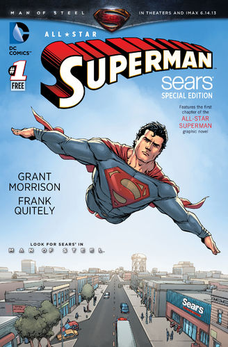
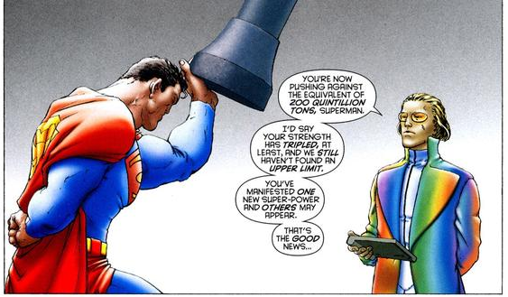
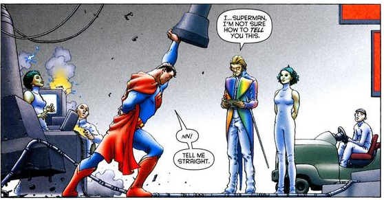
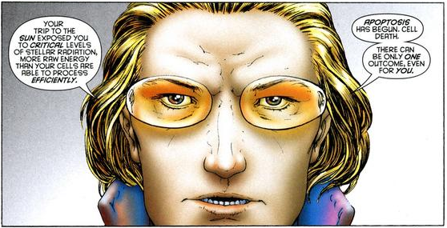
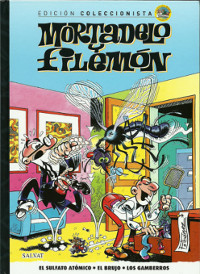
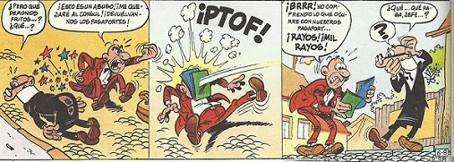

All-Star Superman (2006 - 2008) es la definitiva carta de amor a Superman. Grant Morrison y Frank Quitely firman esta colección recopilada a día de hoy en un único tomo en la que se nos propone una nueva muerte de Superman. Sin embargo, el discurso de Morrison y la estética de Quitely se alejan de la de los años 90 y vuelven al Superman clásico. El dúo narra cómo Superman adquiere una especie de cáncer debido a un exceso de radiación solar, lo cual le conduce a una paulatina e inexorable degeneración. Superman - Los mejores cómics del Hombre de Acero Lejos de hacerse un ovillo y esperar su final, Superman emprende a lo largo de un año diversas gestas, destinadas a dejar un legado para cuando él no esté. De este modo, durante ese mismo año, el Hombre de Acero realiza un repaso por su universo, repasando su relación con villanos, aliados, amigos y otros héroes de DC Comics. Pero no esperéis un Superman oscuro y atormentado. Grant Morrison nos propone el Superman clásico, un auténtico superhombre, un semidios, por encima de la mezquindad y para ello regresa al material de la Edad de Plata, con un discurso tan inocente como elaborado. Por otro lado, este cómic que nos ocupa tiene la curiosa cualidad de ser un proyecto largamente madurado por Morrison. Originalmente, el autor pretendía que fuera la base para una nueva etapa en la serie regular del héroe. Sin embargo, DC lo rechazo. Una maduración posterior del proyecto y el éxito del guionista en los X-Men de Marvel sirvieron para DC volviera a contar con los servicios del escocés para lanzar la que a día de hoy se considera la mini-serie más completa y (casi) perfecta de Superman. Por cierto, All-Star Superman está varias veces editado en español y os aseguramos que es una gozada de lectura.
  Creador Francisco Ibáñez lanzado en 1969 con la Editorial Bruguera. El sulfato atómico es una loción que, según el profesor Bacterio, elimina las plagas del campo. Sin embargo, la loción hace justo el efecto contrario: agranda a los animales, por lo que representa un grave peligro para la humanidad.
Lo peor del caso es que uno de los frascos que contienen ese compuesto fue robado por agentes de la república de Tirania. Allí gobierna el dictador Bruteztrausen, quien pretende dominar el mundo. La misión de Mortadelo y Filemón es ir a Tirania y recuperar el frasco. Allí los agentes de la frontera les expulsan, porque Mortadelo en un error cogió unos recetarios en vez de los pasaportes. Por ello deben entrar de incógnito, con los disfraces de Mortadelo. Llegan a la ciudad y logran entrar al palacio, arrebatar el frasco al presidente en sus propias narices y huir, todo ello gracias a la ayuda de un frasco de dicho sulfato que se llevaron desde España.
Esta historieta, junto con Valor y... ¡al toro!, son valoradas como las mejores de Mortadelo y Filemón.
Su extensión y el cuidado de su guion y dibujos la emparenta en ocasiones a la historieta franco-belga más clásica, como la del álbum de Tintín El asunto Tornasol. y, sobre todo, QRN en Bretzelburg de Spirou y Fantasio. Esto es debido a que Ibáñez quiso dar un aire mucho más realista a la obra, basándose en el estilo de otros autores europeos de la época (Franquin de Spirou, Peyo de Benoit Brisefer... de los que toma el estilo y muchos de los objetos, personajes secundarios y fondos), y, en los que, aunque el humor sea lo primero, siempre se da un poco de importancia al realismo en los personajes, fondos y cronología de la historia.
